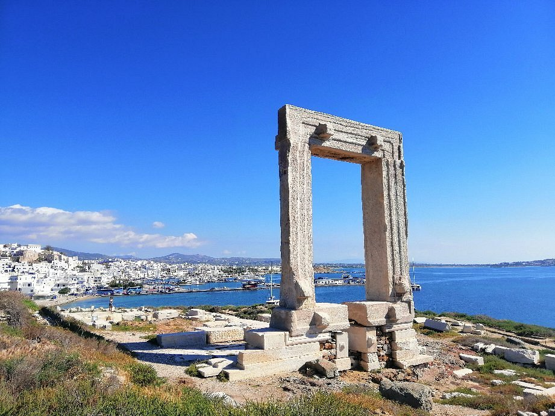

What are megalithic nubs?
There is a globally observable phenomenon in megalithic architecture: the nubs—those protruding elements on huge stone blocks, like the ones in Ollantaytambo, Peru.It takes a truly heroic effort to chisel off an inch of material from the entire surface of such a massive stone to create this protrusion. Or... maybe that's not how they were made?
Cast or carved?
Now take a look at this roman wall. If these nubs were carved, then the overflow of material on the top of the stones, beyond the mold would also have been carved. Sounds believable, right?Not at all. Just as no one would be foolish enough to carve nubs, no one would be foolish enough to carve overflow either.
Bottom, bottom, bottom
Another common characteristic of nubs is that they're found at the bottom of the stones. And when they're not at the bottom, it means the stone has been rotated. Or, if that's not the case, then that nub isn't a nub after all.Okay, then what else?
A door hinge?
It's important to note that not all protrusions are "nubs" in the sense we use the term. Real nubs lost their functions long time ago. The reason we don't know their purpose is because they no longer serve one.But this one, and many others were created with a specific purpose in mind. Artificial stone can intentionally be shaped into forms, such as supports designed to hold up a beam or a door or some another function.
Rotated stones
This is a clear example of a nub that isn't at the bottom of the stone—but it was during casting. Notice how these stones are uniform in size. This is a sure sign they were cast in molds. And at the bottom of the mold, right in the center, there was a hole.But why?
What is going on here?
The role of water
To understand the true role of the nubs, we need to explore a characteristic of modern-day concrete. The concrete we use today is a hydrate.This means that water is an integral part of the concrete. It doesn't harm it; it helps it. Over time, the concrete becomes harder and harder thanks to the water within it.
Ancient artificial stones
…and this is the polar opposite of how some ancient artificial stones set. While water is also needed for mixing in their case, it becomes entirely unnecessary during the curing process—so much so that if it's not removed, it can ruin the stone.In fact, water gets released during the curing process right back into the mix and quite literally turns the stone into a puddle if it's not removed.
Stone or puddle?
Now take a look at this video below. We poured a mixture of artificial limestone into three different molds. All mixes were dry to the touch, and hard enough to build on them initially. But after a few hours...
1. The first mold has a hole (nub) at the bottom, allowing the water released during the curing process to escape. This mixture feels solid to the touch and remains so as it sets.
2. The second mold (upside down silicone pyramid mold) has no hole at the bottom, but the top is open enough to allow for evaporation. Even so, the material begins to soften during curing.
3. The third mold (plastic food container) was completely sealed, leaving no way for the water to escape. That stone is ruined—it turns into a puddle. Water is running off the top.
2. The second mold (upside down silicone pyramid mold) has no hole at the bottom, but the top is open enough to allow for evaporation. Even so, the material begins to soften during curing.
3. The third mold (plastic food container) was completely sealed, leaving no way for the water to escape. That stone is ruined—it turns into a puddle. Water is running off the top.
STOP! Can anybody replicate this experiment?
Absolutely! The formula of the artificial limestone is available in my book. You can use that in 3 different molds to see the effect with your own eyes for sure.
The pudding syndrome
So, unlike concrete, ancient artificial stones can't be built upon at all until the excess water is drained from them. Without nubs, construction comes to a halt.You can't build a castle on pudding.
Mitigating the excess water problem
The simplest solution for removing the excess water is a drainage hole. It doesn't matter what the formwork is made of—it could be wood or fabric—a hole needs to be drilled at the bottom.To prevent the entire stone from leaking out through the hole, a piece of fabric is placed over it, allowing only the water to pass through. The fabric bulges out, but behind it, the nub's material is the same as the stone, which is why it literally hardens into solid rock.
Naxos Portara Riddle
Can you figure out how this was made? Observe the position and number of the nubs on each element, and try to figure out how this gate was made.The solution is hidden behind the image. If you can't figure it out on your own, just click on the picture.

The lintel was cast separately in a mold that included two drainage holes at each end.
The two columns were cast standing up, possibly on site since the nubs are on the bottom of the column.
After that, they rotated the finished lintel to ensure it wouldn't wobble and placed it on top of the columns.
The two columns were cast standing up, possibly on site since the nubs are on the bottom of the column.
After that, they rotated the finished lintel to ensure it wouldn't wobble and placed it on top of the columns.

The message the nubs convey to us is that ancient artificial stones were not hydrate-based like modern concrete, so the excess water had to be drained from them.
The sixth domino is already wobbling...
The sixth domino is already wobbling...